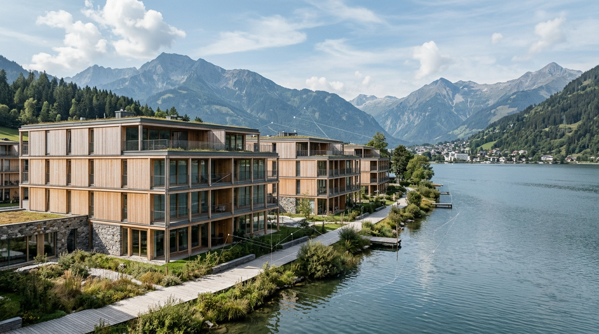

CO2 Bilanz Gebäude Benchmark DACH: Transparenz für nachhaltiges Bauen

TL;DR
Die CO2-Bilanz pro Quadratmeter wird zum zentralen Maßstab für nachhaltiges Bauen im DACH-Raum. Klare Benchmarks sind essenziell, um die Performance von Bestands- und Neubauten zu bewerten und die Dekarbonisierung voranzutreiben. Dieser Artikel beleuchtet aktuelle Werte und Herausforderungen.
Die Notwendigkeit, die Umweltauswirkungen von Gebäuden präzise zu quantifizieren, rückt die CO2-Bilanz pro Quadratmeter ins Rampenlicht. Insbesondere im deutschsprachigen Raum (DACH) etablieren sich erste Benchmarks, die Bauherren, Asset- und Facility-Managern eine wertvolle Orientierung bieten.
Die Relevanz der CO2-Bilanz pro m² im DACH-Raum
Die Klimawirkung von Gebäuden während ihres gesamten Lebenszyklus – von der Herstellung über den Bau und Betrieb bis hin zum Rückbau – wird zunehmend kritisch betrachtet. Die CO2-Bilanz pro Quadratmeter (kg CO2eq/m²) hat sich dabei als einheitliches und vergleichbares Maß etabliert. Sie ermöglicht es, die Emissionen verschiedener Gebäude und Bauweisen objektiv zu bewerten und Ziele für die Reduktion zu definieren.
Für Bauherren bietet eine solche Kennzahl die Grundlage, um die Nachhaltigkeit von Projekten von Anfang an zu planen und zu steuern. Asset Manager können damit die Performance ihres Portfolios bewerten und die Attraktivität bzw. Zukunftsfähigkeit ihrer Immobilien einschätzen. Facility Manager erhalten Werkzeuge zur Optimierung des laufenden Betriebs und zur Identifikation von Einsparpotenzialen bei Energie und Materialien.
Die regulatorischen Anforderungen, wie beispielsweise die EU-Taxonomie oder nationale Green-Building-Standards, verstärken den Bedarf an verlässlichen CO2-Daten. Der DACH-Raum, mit seiner starken Fokussierung auf Qualität und Nachhaltigkeit, ist hierbei ein Vorreiter bei der Entwicklung und Anwendung dieser Kennzahlen.
Aktuelle Benchmarks: Ein Blick auf die Zahlen
Die Erstellung von aussagekräftigen Benchmarks für die CO2-Bilanz pro Quadratmeter ist komplex und abhängig von vielen Faktoren, darunter Gebäudetyp, Bauweise, verwendete Materialien und Lebensdaueransatz. Dennoch lassen sich aus aktuellen Studien und Marktbeobachtungen im DACH-Raum grobe Bandbreiten ableiten. Diese Zahlen dienen als Orientierung und sollten stets im Kontext des jeweiligen Projekts interpretiert werden.
Für Neubauten im Bereich Wohnen liegen die Embodied Carbon-Emissionen (graue Energie) typischerweise in einem Bereich von etwa 300 bis 800 kg CO2eq/m². Bei Nicht-Wohngebäuden, wie Büro- oder Verwaltungsgebäuden, können diese Werte aufgrund höherer technischer Ausstattungen und komplexerer Tragwerke auch bei 400 bis 1000 kg CO2eq/m² oder mehr liegen. Diese Werte beziehen sich primär auf die Bauphase und die eingesetzten Materialien.
- Beispiel Wohnungsbau Neubau: Typischerweise 300-800 kg CO2eq/m² (Embodied Carbon).
- Beispiel Bürogebäude Neubau: Typischerweise 400-1000+ kg CO2eq/m² (Embodied Carbon).
- Werte können stark variieren je nach Materialwahl (z.B. Holzbau vs. Massivbau) und Lebenszyklusmodell.
Bestandsgebäude: Herausforderungen und Potenziale
Die energetische und ökologische Bewertung von Bestandsgebäuden stellt eine besondere Herausforderung dar. Digitale Zwillinge und detaillierte Gebäudeaufnahmen werden immer wichtiger, um verlässliche Daten für die CO2-Bilanz zu gewinnen. Die Emissionen im Betrieb (grüne Energie für Heizung, Kühlung, Strom) sind hier oft der dominante Faktor, können aber durch Sanierungen erheblich reduziert werden.
Im DACH-Raum zeigen Analysen von Energieausweisen und Sanierungsstudien, dass ältere Gebäude ohne moderne Dämmung und erneuerbare Heizsysteme CO2-Emissionen von 50 bis über 150 kWh/m²a (entspricht ca. 10-30 kg CO2eq/m²a für den reinen Energieverbrauch) aufweisen können. Durch umfassende Sanierungen lassen sich diese Werte oft auf unter 20-40 kWh/m²a (ca. 4-8 kg CO2eq/m²a) senken, was einem signifikanten Beitrag zur Dekarbonisierung entspricht.
- Bestandsgebäude (unsaniert): Oft 10-30 kg CO2eq/m²a für den Betrieb.
- Nach Sanierung (gut gedämmt, effiziente Heizung): Zielwerte unter 4-8 kg CO2eq/m²a.
- Die graue Energie des Bestands (bei Abriss) ist ebenfalls zu berücksichtigen, aber oft deutlich geringer als bei Neubauten mit viel Primärenergiebedarf bei der Herstellung.
Methodik und Datenbasis: Die Grundlage für Benchmarks
Die Aussagekraft von Benchmarks hängt maßgeblich von der zugrundeliegenden Methodik und der Qualität der Daten ab. Standards wie die ISO 14040/14044 oder spezifische Produktkategorienrichtlinien (PCR) für Umweltdeklarationen (EPD) bilden die Basis für Lebenszyklusanalysen (LCA). Studienergebnisse von Instituten wie Fraunhofer oder Initiativen wie der Deutschen Energie-Agentur (dena) tragen zur Schärfung der Methoden und zur Bereitstellung von Datensätzen bei.
Die Herausforderung liegt oft in der Granularität der Daten. Während für gängige Materialien wie Beton, Stahl oder Holz relativ verlässliche EPDs verfügbar sind, fehlen für spezifische Bauteile oder Ausstattungen oft noch standardisierte Lebenszyklusdaten. Dies erschwert präzise Vergleiche, insbesondere bei innovativen Bauprodukten oder komplexen Systemen.
Herausforderungen und Ausblick für die Gebäudedigitalisierung
Die Digitalisierung spielt eine Schlüsselrolle bei der Erfassung, Analyse und Kommunikation von CO2-Bilanzen. Tools wie Building Information Modeling (BIM) ermöglichen eine frühzeitige Integration von Nachhaltigkeitsaspekten und die automatische Extraktion von Materialmengen für LCA-Berechnungen. Die Entwicklung von Plattformen, die CO2-Daten über den gesamten Lebenszyklus hinweg verwalten und benchmarken, ist ein wichtiger Schritt.
- BIM als Basis für datengestützte LCA-Berechnungen.
- Entwicklung standardisierter Schnittstellen für den Datenaustausch.
- Erhöhte Transparenz durch digitale CO2-Pässe für Gebäude.
- Integration von operativen Emissionen und Embodied Carbon in ganzheitliche Ansätze.
Häufige Fragen
Was bedeutet CO2-Bilanz pro Quadratmeter?
Die CO2-Bilanz pro Quadratmeter (kg CO2eq/m²) quantifiziert die gesamten Treibhausgasemissionen eines Gebäudes, die direkt oder indirekt durch seine Errichtung, seinen Betrieb und seinen Rückbau verursacht werden, und setzt diese ins Verhältnis zur jeweiligen Nutzfläche.
Welche Faktoren beeinflussen die CO2-Bilanz von Neubauten?
Wesentliche Faktoren sind die verwendeten Baumaterialien (z.B. Zement, Stahl, Holz), deren Herstellungsenergien (graue Energie), die Energieeffizienz der Gebäudehülle und Anlagentechnik, sowie die Wahl der Energieversorgung im Betrieb.
Sind die Benchmarks im DACH-Raum bereits standardisiert?
Es gibt noch keine universell verbindlichen, gesetzlich festgelegten Benchmarks für alle Gebäudetypen im DACH-Raum. Allerdings etablieren sich zunehmend branchenübliche Richtwerte und Empfehlungen durch Verbände und Forschungsinstitute, die als Orientierung dienen.
Wie können Asset Manager die CO2-Bilanz ihres Portfolios optimieren?
Asset Manager können durch gezielte Sanierungsmaßnahmen zur Steigerung der Energieeffizienz, den Einsatz emissionsarmer Baumaterialien bei Umbauten und die Umstellung auf nachhaltige Energieversorger die CO2-Bilanz ihrer Immobilienanlagen verbessern.
Welche Rolle spielt die Digitalisierung bei der CO2-Bilanzierung?
Die Digitalisierung, insbesondere durch BIM, ermöglicht eine präzisere Erfassung von Materialdaten, unterstützt automatisierte Lebenszyklusanalysen und schafft die Grundlage für transparente CO2-Dokumentation und Controlling über den gesamten Lebenszyklus eines Gebäudes.